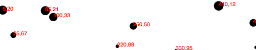
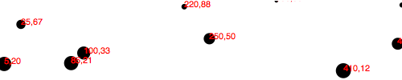
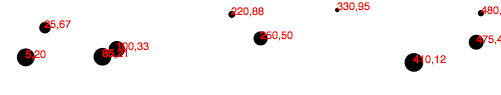
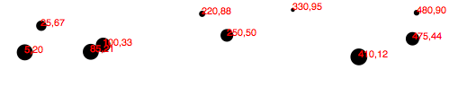
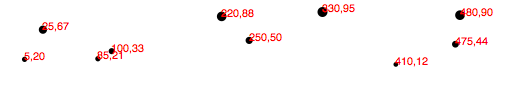
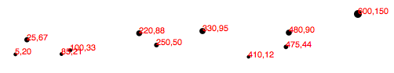
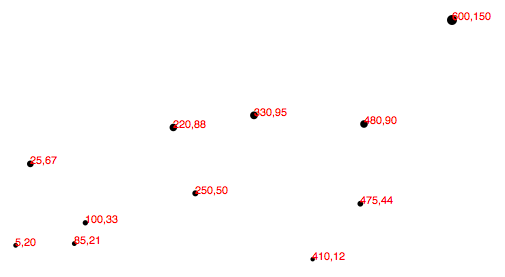

"Масштабирование - это функция, которая преобразует входной набор данных в выходной набор в заданном диапазоне."
Так описал термин "масштабирование" Майк Босток применительно к D3.
Значения в любом наборе данных вряд ли будут соответствовать в точности для вашей визуализации. Масштабирование обеспечивает удобный способ сопоставления входного набора данных и данных, которые будут участвовать в вашей визуализации.
Масштабированием в D3 занимаются функции, параметры которых определяете именно вы. Однажды создав функцию масштабирования, вы ее вызываете каждый раз каждый раз, когда получаете набор данных, а она вам возвращает красиво масштабированные выходные значения. Вы можете определить и не одну такую функцию.
Возможно, это очень заманчиво думать, что масштабирование - это что-то визуальное, появляющееся на окончательном изображении, как, например, набор делений с указанием последовательности значений. Не обманывайте себя! Эти метки являются частью оси, являющиеся, по сути, наглядным воплощением масштабирования. Масштабирование - это математическое отношение, без конкретного визуального представления. Я призываю вас считать масштабирование и наглядное представление на осях взаимосвязанными, но все же разными понятиями.
Это все касается линейного масштабирования, так как это самое простое и понятное. Однако, поняв принцип, вы сможете легко понять и нелинейное масштабирование.
Представьте, что следующий набор данных показывает количество проданных яблок ларька, расположенного на обочине дороги, по месяцам:
var dataset = [ 100, 200, 300, 400, 500 ];
Сначала хорошая новость: каждый месяц ларек продает на сто яблок больше, чем в предыдущем месяце! Взрывной бизнес. Чтобы продемонстрировать этот успех, вы хотите сделать столбиковую диаграмму, иллюстрирующую крутой подъем продажи яблок, где каждому значению проданных яблок соответствует высота одного из столбиков на диаграмме.
До сих пор, мы использовали значения данных напрямую в визуальных параметрах. Так, если было продано 500 яблок, соответствующий столбик будет 500 пикселей в высоту.
Это может сработать, но что насчет следующего месяца, когда будут проданы 600 яблок? А годом позже, когда будет продано 1800 яблок? Ваша аудитория должна будет приобретать дисплеи большего размера, только для того, чтобы видеть всю высоту этих ваших столбиков с проданными яблоками!
Это как раз тот случай, когда нам поможет масштабирование. Так как яблоки не являются пикселями(так же как и апельсинами), нам нужна масштабирующая функция для сопоставления проданным яблокам высоту в пикселях.
Входная область данных для масштабируемой функции является диапазоном допустимых входных значений. Учитывая пример с яблоками выше, соответствующая входная область будет либо 100-500(минимальное и максимальное значение набора данных), либо 0-500.
Выходной диапазон в масштабируемой функции - это диапазон возможных выходных значений, обычно используемый для вывода на дисплей в пикселях. Выходной диапазон выбирается полностью на ваше усмотрение. Если вы решите, что самый низкий столбик с яблоками будет 10 пикселей в высоту, а самый высокий 350 пикселей, то вы можете установить выходной диапазон 10 и 350 пикселей.
Например, сделаем масштабирующую функцию с входной областью данных 100-500, и выходной диапазон значений. Если бы вы дали нашей функции на вход 100, но выходе получили бы 10. Если бы вы дали на вход 500, но выходе получили бы 350. Если на входе 300, то на выходе 180 получите и распишитесь(300 - это середина входной области данных, а 180 середина выходного диапазона).
Мы можем отобразить входную область данных и выходной диапазон значений так:
Еще одна вещь: не стоит путать эти два понятия входной диапазон данных и выходной диапазон значений.
Если вы знакомы с концепцией нормализации, может быть полезным вам знать, как все происходит в нашем примере на самом деле.
Нормализацией является процесс преобразования числовых значений в новые значения в диапазоне от 0 до 1, основываясь на минимальном и максимальном начальных значениях. Например, в году 365 дней. 310й день в году это около 0.85 года, или если в процентах, то 85%.
Если масштабирование является линейным, мы используем D3 и позволяем ему управлять математическим процессом нормализации. Входные значения нормализуются в соответствии с входной областью значений, а далее нормализованные значения масштабируются в выходной диапазон.
Генератор масштабируемых функций в D3 доступен по адресу d3.scale, где далее указываете необходимую вам масштабируемую функцию.
var scale = d3.scale.linear();
Мои поздравления! Теперь scale - это функция, через которую вы можете пропускать входные значения(Помните, в JavaScript переменные могут хранить также и функции).
scale(2.5); //Returns 2.5
Так как у нас нет еще входной области значений и выходного диапазона значений, эта функция масштабирует входные значения к выходным в пропорции 1:1. Это значит, что какое бы значение мы ни передали в функцию, она вернет его же.
Мы можем задать входную область значений 100-500, передавая эти значения в метод domain() в качестве массива:
scale.domain([100, 500]);
Также мы устанавливаем выходной диапазон вызовом метода range():
scale.range([10, 350]);
Эти шаги могут быть сделаны отдельно, как сделаны выше, или мы можем использовать цепочки вызовов:
var scale = d3.scale.linear()
.domain([100, 500])
.range([10, 350]);
В любом случае, наша масштабирующая функция готова к использованию!
scale(100); //Returns 10 scale(300); //Returns 180 scale(500); //Returns 350
Как правило, вы будете вызывать эту функцию внутри метода attr() или ему подобных. Давайте, наконец, изменим нашу точечную диаграмму теперь уже с использованием динамического масштабирования.
Давайте посмотрим на наш набор данных для точечной диаграммы:
var dataset = [
[5, 20], [480, 90], [250, 50], [100, 33], [330, 95],
[410, 12], [475, 44], [25, 67], [85, 21], [220, 88]
];
Вспомните, что набор данных представляет из себя массив массивов. Мы использовали первое значение в каждом массиве как координату х, а второе значение, как координату y. Давайте начнем с оси x.
Если долго пялиться на наш набор данных, можно сделать вывод, что значения х варьируются от 5 и до 480, поэтому вполне резонно сделать для них входную область значений 0-500, так?
...
Почему вы на меня так смотрите? Ааа, потому что вы хотите, чтобы ваш код был гибким и масштабируемым, чтобы он работал, даже если наши данные изменятся в будущем. Умно!
Вместо того, чтобы указывать фиксированные значения для задания области входных значений, мы можем использовать подходящие для этих целей методы min() и max(), чтобы анализировать наш набор данных автоматически. Например, код ниже перебирает каждое значение x в наших подмассивах и возвращает наибольшее значение:
d3.max(dataset, function(d) { //Returns 480
return d[0]; //References first value in each sub-array
});
Соберем наш код вместе и получим масштабирующую функцию для оси x:
var xScale = d3.scale.linear()
.domain([0, d3.max(dataset, function(d) { return d[0]; })])
.range([0, w]);
Во-первых, заметьте, что я назвал эту функцию xScale. Конечно, вы можете назвать вашу масштабирующую функцию как вы захотите, но текущее название позволяет нам помнить, что делает наша функция.
Во-вторых, заметьте, что для минимального значения области входных значений я выставил 0(Еще можно использовать метод min() аналогично тому, как мы использовали max). Максимальным значением области входных значений является максимальное значение в нашем наборе данных(которое равно 480).
И в конечном итоге, я установил выходной диапазон значений 0-w, то есть ширина нашего SVG.
Мы будем использовать точно такой же подход для создания масштабируемой функции для оси y:
var yScale = d3.scale.linear()
.domain([0, d3.max(dataset, function(d) { return d[1]; })])
.range([0, h]);
Обратите внимание что метод max() ссылается на d[1], координату y нашего подмассива. Также максимальным значением выходного диапазона(метод range()) выставлено h вместо w.
Масштабирующие функции готовы! Теперь все что нам надо - это использовать их. Просто изменим код, где мы создавали круг для каждого элемента нашего набора данных:
.attr("cx", function(d) {
return d[0];
})
и изменим его, используя масштабирующую функцию:
.attr("cx", function(d) {
return xScale(d[0]);
})
Повторим этот подход и для оси y. Заменим старый код:
.attr("cy", function(d) {
return d[1];
})
на:
.attr("cy", function(d) {
return yScale(d[1]);
})
Теперь сделаем такие же изменения в тех местах, где мы устанавливаем координаты для текстовых меток. Так, старый код ниже:
.attr("x", function(d) {
return d[0];
})
.attr("y", function(d) {
return d[1];
})
превращается в:
.attr("x", function(d) {
return xScale(d[0]);
})
.attr("y", function(d) {
return yScale(d[1]);
})
Готово!
Смотрим на результат рабочего кодa. На взгляд, результат разочаровывает, поскольку уж сильно похож на нашу оригинальную точечную диаграмму. Хотя мы достигли куда большего прогресса, чем мы видим.
Возможно, вы заметили, что меньшие значения y расположены в верхней части диаграммы, а большие значения y расположены ближе к низу. Теперь, так как мы используем масштабирующую функцию, супер просто поменять расположение больших и маленьких значений местами: чтобы большие значения были расположены в верхней части диаграммы, как можно было бы и ожидать. Мы просто изменим выходной диапазон для yScale, меняя:
.range([0, h]);
на:
.range([h, 0]);
Здесь пример этого кода. Да, теперь меньшим значениям y на входе соответствуют большие значения y на выходе, тем самым получается эффект, которого мы добивались. Я знаю, это так легко!
Так как некоторые элементы изображения обрезаются, введем переменную отступа от краев:
var padding = 20;
Теперь мы включим эту переменную в расчет диапазона выходных значений как по оси x, так и по оси y. Раньше xScale был range([0, w]), теперь:
.range([padding, w - padding]);
Раньше yScale был range([h, 0]), теперь:
.range([h - padding, padding]);
Теперь у нас есть в запасе 20 пикселей сверху, снизу, слева, справа SVG-элемента, которые не берутся в расчет. И готово!
Но текстовые метки справа до сих пор могут обрезаться. Тогда, я просто увеличу отступ справа в два раза:
.range([padding, w - padding * 2]);
Лучше. Здесь пример рабочего кода. Но есть еще одно изменение, которое я бы хотел сделать. Вместо того, чтобы рассчитывать радиус каждого круга как квадратный корень от значения y(что вообще бесполезное, в контексте текущей задачи, занятие), почему бы не создать еще одну функцию масштабирования?
var rScale = d3.scale.linear()
.domain([0, d3.max(dataset, function(d) { return d[1]; })])
.range([2, 5]);
Потом устанавливаю радиус круга таким образом:
.attr("r", function(d) {
return rScale(d[1]);
});
Мы теперь гарантируем, что наши значения радиуса будут находиться в диапазоне значений 2-5(или почти всегда. Смотрите ссылку на метод clamp() ниже). Так, значения 0(минимальное число в области входных значений) будут иметь окружность радиусом 2 пикселя(или диаметр 4 пикселя), а очень большим значениям будут соответствовать круги с радиусом 5(диаметром 10) пикселей.
Вуаля! Наша первая масштабирующая функция, которая не участвует в расчете координат.
И в конце, в случае, если сила нашей масштабирующей функции не взорвала ваше воображение, я бы хотел добавить еще один массив в наш начальный набор данных: [600, 150]
Бум! Здесь этот рабочий код. Обратите внимание, как все старые значения сохраняют свои позиции, но сместились немного ближе друг к другу, вниз и влево, чтобы было место новому значению.
А теперь, последнее откровение: сейчас мы можем очень просто изменить размер нашего SVG, и все будет смасштабировано самостоятельно. Здесь, я увеличил переменную h с 100 до 300, и больше никаких изменений не сделал:
И снова, бум! Рабочий пример обновленного кода. Надеюсь, вы видите это и осознаете: больше не будет бессонных ночей, проведенных за модификацией кода только потому что клиент решил, что график должен быть в ширину 800 пикселей вместо задуманных 600. Да, вы будете спать благодаря мне(и блестящим встроенным методам D3)! Быть хорошо отдохнувшим - это конкурентное преимущество. Вы можете меня поблагодарить позже.
d3.scale.linear() имеет несколько других удобных методов, которые заслуживают краткого упоминания здесь:
В дополнение к линейной масштабирующей функции(которая описана выше), библиотека D3 обладает еще несколькими масштабирующими функциями: